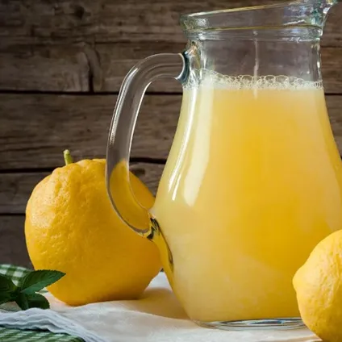

Отримуємо лимонний фреш. Якщо не використовувати шкірку цитрусів, не буде гіркоти, а лише свіжа кислинка. Для цього можна взяти цитрус-прес або віджати вручну рідину з лимона. Щоб соку вийшло більше, залишають фрукт за кімнатної температури на деякий час або підставляють під струмінь теплої води. Додатково його можна здавити руками або під тиском долоні покатати. Після цього отримувати сік.
Як приготувати лимонад?

Лимонад - це не тільки смачний і освіжаючий напій, але ще і дуже корисний. Такий напій багатий вітамінами, а головне, зроблений без консервантів і хімічних добавок. Всього за 20 хвилин у вас вийде відмінний запас лимонаду, використавши при цьому тільки лимони, цукор і воду. За бажанням, ви можете додати м'яту і лід. Як правило, такий напій виходить дешево, робиться швидко, а користі приносить, явно, більше, ніж напої з магазину!
Приготування
Інгрідієнти:
- лимони (лайми) або свіжий сік;
- цукровий пісок, вода;
- меліса чи м'ята.